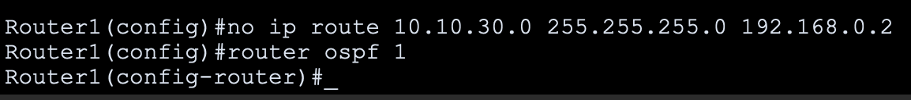
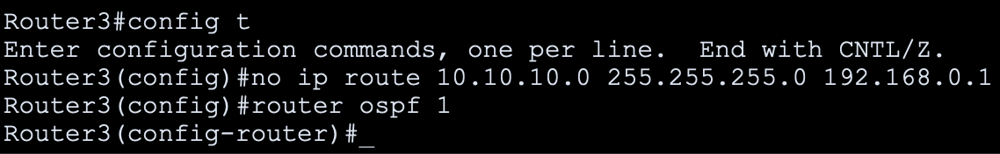
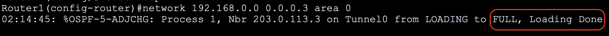
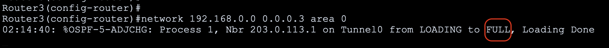
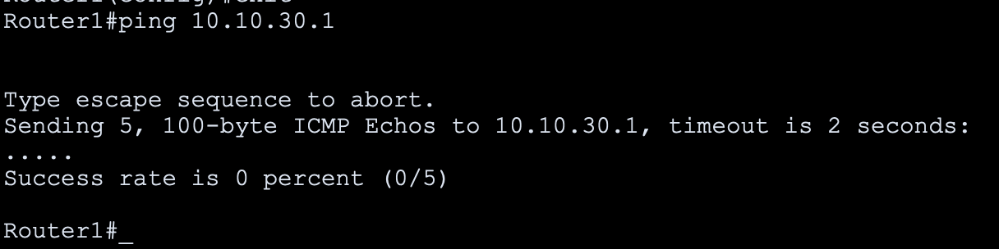
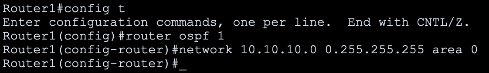
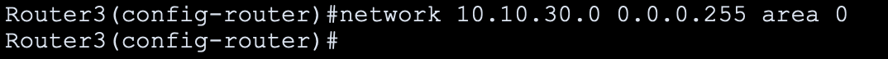
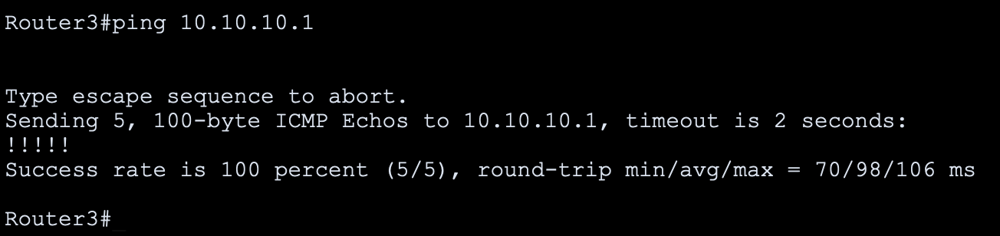
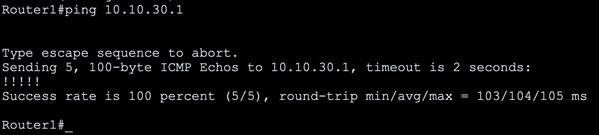
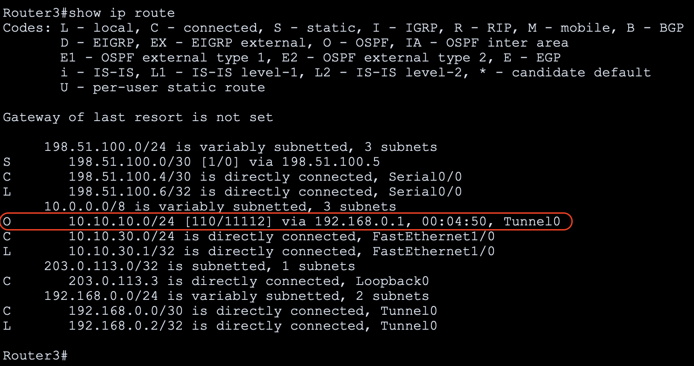

Why this project
Static routes work, but they don't scale — every new subnet means a manual route added on every router that needs to reach it. This project starts from the working GRE tunnel built in the previous project and swaps its static routes for OSPF, so each router's LAN is learned automatically through the tunnel instead of typed in by hand.
Removing the static routes and starting OSPF
Remove Router1's static route
Removed Router1's static route to 10.10.30.0/24 and started router ospf 1. This clears the manually configured route before introducing OSPF as the new routing mechanism.

Remove Router3's static route
Performed the mirrored cleanup on Router3 by removing its static route to 10.10.10.0/24 and starting OSPF process 1.

Bringing up the OSPF adjacency over the tunnel
Router1 advertises the tunnel network
Added network 192.168.0.0 0.0.0.3 area 0 on Router1 so OSPF runs on Tunnel0. The captured output shows the neighbor relationship reaching FULL once both tunnel endpoints are participating in OSPF.

Router3 advertises the tunnel network
Applied the same tunnel-network statement on Router3. With both Tunnel0 interfaces participating in area 0, Router1 and Router3 form an OSPF neighbor relationship across the GRE tunnel.

Discovering the adjacency alone isn't enough
Ping still fails — 0% success
Even with a FULL OSPF adjacency between the two routers, pinging the remote LAN still fails. The neighbor relationship is established, but neither LAN prefix has been included in OSPF yet, so the routers still do not have routes to those remote LANs.

Advertising the LANs
Router1 LAN advertisement — incorrect wildcard mask
I entered network 10.10.10.0 0.255.255.255 area 0 on Router1. That was a mistake. For this lab, the intended command was network 10.10.10.0 0.0.0.255 area 0, which limits the match to the 10.10.10.0/24 range.
Entered by mistake: network 10.10.10.0 0.255.255.255 area 0
Should have been: network 10.10.10.0 0.0.0.255 area 0
Why did it still work? In an OSPF network statement, the wildcard mask is used to match interface IP addresses. With 0.255.255.255, only the first octet is fixed, so the command effectively matches any Router1 interface with a 10.x.x.x address. In this lab, Router1 only has one such interface — 10.10.10.1/24 — so OSPF still enabled itself on the intended LAN interface and advertised that interface's actual 10.10.10.0/24 prefix.
What happens if it is not corrected? Nothing immediately breaks in this topology, but the configuration is unnecessarily broad. If Router1 later receives another interface in the 10.0.0.0/8 range — for example 10.20.20.1/24 — this same statement could also enable OSPF on that interface in area 0. That could cause an unintended OSPF adjacency to form on that link and could advertise additional connected networks that were never meant to participate in OSPF.
The important distinction is that the broad wildcard does not turn 10.10.10.0/24 into a 10.0.0.0/8 route. It broadens which interface addresses can match the OSPF statement. The interface's own configured subnet is still what OSPF advertises.
Corrective action: In a production configuration, I would replace the broad statement with network 10.10.10.0 0.0.0.255 area 0 so only the intended LAN interface is matched.

Router3 advertises its LAN with a /24 match
Added Router3's LAN to OSPF using network 10.10.30.0 0.0.0.255 area 0, which deliberately matches the 10.10.30.0/24 LAN interface.

Verifying dynamic connectivity
Router3 reaches Router1's LAN
100% success — Router3 can now reach Router1's LAN after the LAN prefixes are included in OSPF.

Router1 reaches Router3's LAN
The reverse test succeeds as well, confirming connectivity in both directions with routing supplied by OSPF instead of the previous static routes.

Confirm the route is dynamic
Router3's routing table shows Router1's LAN with an O (OSPF) code instead of the S (static) code from the previous project. That confirms the remote LAN route is being learned through OSPF over Tunnel0 rather than maintained as a manual static route.

Result: the two LANs are reachable again, but this time through routes learned dynamically with OSPF. The lab also demonstrates that forming a FULL OSPF adjacency and advertising the LAN prefixes are separate requirements: the routers became neighbors across Tunnel0 before they actually learned each other's LAN routes.
What this demonstrates
- A FULL OSPF adjacency confirms that the neighbors completed database exchange, but it does not guarantee that a specific LAN prefix has been included in OSPF. The relevant interfaces still have to participate before the remote router can learn those routes.
- The Router1 command
network 10.10.10.0 0.255.255.255 area 0was a configuration mistake. It still works in this lab only because10.10.10.1is Router1's only10.x.x.xinterface. The correct, tighter statement isnetwork 10.10.10.0 0.0.0.255 area 0. - Testing after each configuration change surfaces gaps like “adjacency up, but still can't ping” instead of treating successful control-plane output as proof that the intended data-plane path is working.
- Comparing route codes in the routing table — S for static versus O for OSPF — is a quick way to verify which routing mechanism is currently providing the path during a migration from static to dynamic routing.